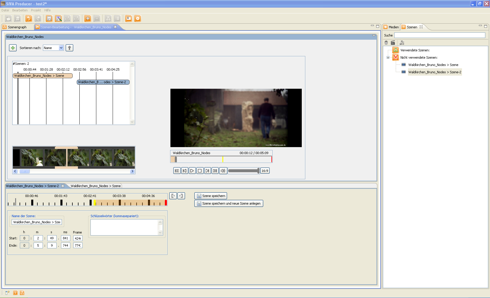

Beim manuellen Videoschnitt können die Grenzen der Szenen beliebig festgelegt werden. Hilfsmittel hierzu sind eine Zeitleiste und Vorschaubilder sowie ein Videofenster in dem der aktuell ausgewählte Frame angezeigt wird. Um Start und Endzeit einer Szene festzulegen gibt es mehrere Möglichkeiten. Zum einen kann mit der linken Maustaste auf der Zeitleiste der Startzeitpunkt und mit der rechten Maustaste der Endzeitpunkt festgelegt werden. Außerdem können Start- und Endzeitpunkt mittels des Preview-Bereichs, durch Klicken des Start- und Ende-Buttons während dem Abspielen des Videos und durch Einstellen des Sliders auf die gewünschte Zeit und darauffolgendes Klicken des Start- bzw. Ende-Buttons festgelegt werden.
Das Videoschnitt-Fenster ist in zwei Bereiche aufgeteilt. Im oberen Teil befindet sich ein Videoplayer mit Steuerelementen zur Navigation im Video. Außerdem ist hier eine Übersicht über bereits definierte Szenen zu finden, wobei zwei verschiedene Ansichten möglich sind: eine Detailansicht mit Szenenlänge und näheren Informationen zu den einzelnen Szenen (z.B. Startzeitpunkt, ein Screenshot des ersten Szenenbildes, etc.) und eine platzsparende Ansicht, bei der nur die Länge und der Name der Szene angezeigt werden. Im unteren Bereich werden die bereits definierten Szenen visualisiert, außerdem können hier die Daten der Szene, wie Start- und Endzeitpunkt sowie der Name geändert werden.
